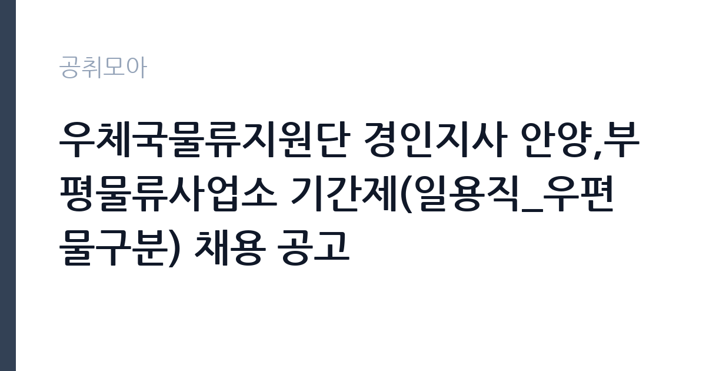

[공공기관] 우체국물류지원단 경인지사 안양,부평물류사업소 기간제(일용직_우편물구분) 채용 공고
(재)우체국물류지원단 · 인천 · 마감 2026-11-30 (D-30) · 출처 잡알리오

한눈에 보는 모집 조건
| 기관 | (재)우체국물류지원단 |
|---|---|
| 공고명 | 우체국물류지원단 경인지사 안양,부평물류사업소 기간제(일용직_우편물구분) 채용 공고 |
| 고용형태 | 일용직 |
| 근무지 | 인천 |
| 게시일 | 2026-11-01 |
| 마감일 | 2026-11-30 (D-30) |
지원자격, 이렇게 읽으세요
- 공공기관 채용공시
- 세부 조건은 원문 공고문 확인
이 공고의 응시자격은 학력과 경력을 보지 않습니다. 알리오 공시 기준 학력정보는 학력무관, 채용구분은 신입과 경력 모두 해당이며 우대조건은 없습니다. 실제로 지원자를 가르는 기준은 두 가지입니다. 첫째 우체국물류지원단 인사규정상 결격사유에 해당하지 않아야 하고, 둘째 채용되면 즉시 근무할 수 있어야 합니다. 결격사유는 피성년후견인, 파산선고 후 복권되지 않은 자, 금고 이상 실형의 집행이 끝난 날부터 5년이 지나지 않은 자, 집행유예 기간이 끝난 날부터 2년이 지나지 않은 자 등 열두 항목으로 세분화되어 있습니다. 여기에 신체검사 불합격 판정도 포함되지만 국가유공자와 의상자, 장애인은 직무수행에 지장이 없다고 인정되면 예외로 인정됩니다. 지원 전에 본인이 해당하는 항목이 있는지 원문 결격사유 조항을 한 번 훑어보십시오. 자격 요건보다 놓치기 쉬운 함정은 서류 형식입니다. 공고문은 우리 단 소정양식에 의한 입사지원서만 정상 접수한다고 명시하고 있습니다. 알바몬이나 알바천국에 올라온 공고라도 이력서를 임의 양식으로 올리면 접수로 인정되지 않을 수 있으니, 첨부된 입사지원서 서식을 내려받아 작성해야 합니다. 블라인드 채용 원칙도 적용됩니다. 입사지원서와 자기소개서에 학교명이나 가족관계, 학력처럼 편견이 개입될 수 있는 정보를 직접 또는 간접적으로 적으면 불이익을 받을 수 있습니다.
이 공고의 포인트
첫 번째 포인트는 시급입니다. 이 공고의 시급 12,000원은 2026년 적용 최저임금 10,320원보다 16.3퍼센트 높고, 15,000원은 45.3퍼센트 높은 수준입니다. 고용노동부가 고시한 2026년 최저임금 시간급이 10,320원이므로, 같은 시간을 일해도 최저임금 일자리보다 시간당 1,680원에서 4,680원을 더 받는 구조입니다. 두 번째는 채용 방식입니다. 물류사업소별로 일 단위 모집을 운영하고 적격자가 있으면 그날 바로 서류합격 통보와 면접을 진행합니다. 대규모 공채처럼 발표를 기다릴 필요가 없고, 근무 시작일도 채용 즉시로 잡혀 있습니다. 세 번째는 근무형태를 고를 수 있다는 점입니다. 중근은 14시부터 23시까지, 야근은 21시부터 다음 날 6시까지, 심야는 22시부터 다음 날 7시까지입니다. 낮 시간대 다른 일정이 있는 사람은 야근이나 심야를, 저녁 시간을 비워야 하는 사람은 중근을 선택하면 됩니다. 다만 야근과 심야는 새벽 시간대 작업이라 체력 소모가 크고, 근무일이 매주 월요일과 공휴일 다음 날 등에 집중된다는 점은 미리 감안해야 합니다.
전형은 어떻게 진행되나
전형은 1차 서류전형과 2차 면접심사로만 진행됩니다. 필기시험이나 인적성검사는 없습니다. 공고문은 서류심사와 면접심사가 동시에 진행될 수 있다고 안내하고 있으며, 1차 서류전형 합격자에게는 개별 유선으로 통보합니다. 최종 합격자 발표는 정해진 날짜를 두지 않고 적격자가 있을 때 즉시 채용하는 방식입니다. 일 단위 모집이기 때문에 어떤 날짜에 지원했는지에 따라 통보 시점이 달라지고, 해당 사업소에 인원이 차면 그 시점에 접수가 마감될 수 있습니다. 서류 단계에서는 결격사유 해당 여부와 소정양식 준수, 제출서류 누락을 확인합니다. 면접 단계에서는 근무 가능한 요일과 시간대, 야간 근무 수용 여부, 성실하게 반복 근무할 수 있는지를 주로 봅니다. 서류전형 때 제출하는 것은 입사지원서 1부와 개인정보 수집·이용 및 제3자 제공 동의서 1부입니다. 최종합격 후에는 주민등록등본 1부와 급여 지급용 통장사본 1부를 내야 하며, 통장사본은 주민번호 뒷자리가 보이지 않게 발급해야 합니다. 제출한 서류는 최종합격자 발표일 이후 20일 이내에 반환을 청구할 수 있고, 반환 비용은 우체국물류지원단이 부담합니다.
원문에서 확인한 전형 방식
□ 우체국물류지원단 인사규정에 따른 결격사유가 없는 자 □ 채용 즉시 근무가 가능한 자
이런 분께 추천해요
- 당장 다음 주부터 일을 시작해 단기간 소득을 만들고 싶은 분. 채용 즉시 근무가 가능한 사람이 응시자격 자체에 들어 있습니다.
- 낮 시간대에 다른 일정이 있어 저녁과 새벽 시간에만 일할 수 있는 분. 중근·야근·심야 가운데 선택할 수 있습니다.
- 안양시 동안구나 인천 부평구에서 도보 또는 대중교통으로 통근할 수 있는 분. 두 사업소 모두 각각 안양우편물류센터와 부평우체국 인근에 있습니다.
지원 전 체크리스트
- 소정양식 입사지원서를 내려받아 작성했는가. 임의 양식 이력서는 정상 접수되지 않을 수 있습니다.
- 개인정보 수집·이용 및 제3자 제공 동의서를 함께 준비했는가. 서류전형 단계 필수 제출 서류입니다.
- 결격사유 열두 항목 가운데 본인에게 해당하는 사항이 없는지 확인했는가. 신체검사 결과도 포함됩니다.
- 지원할 사업소와 근무형태를 정했는가. 안양은 중근 6명·야근 45명·심야 9명, 부평은 중근 15명·야근 40명입니다.
모집 일정과 제출 타이밍
접수는 2026년 11월 1일 일요일부터 11월 30일 월요일까지입니다. 근무일도 같은 기간 안에서 필요할 때 정해지므로, 접수 기간이 곧 근무 가능 기간이라고 보면 됩니다. 일 단위로 모집하기 때문에 마감일까지 기다릴 이유가 없습니다. 오히려 인원이 차면 조기에 닫히므로 지원 시점을 앞당기는 편이 유리합니다. 접수는 알바몬, 알바천국 등 온라인 채용사이트로 받고, 구체적인 접수처는 해당 사업소에 문의하면 안내받을 수 있습니다. 수행업무와 근무지역에 대한 문의는 각 사업소에 오후 5시 이전에 연락해야 합니다. 안양물류사업소는 031-342-9409, 부평물류사업소는 032-263-1256입니다. 서류합격 통보가 유선으로 오기 때문에 응시 기간에는 전화를 받을 수 있도록 연락처를 정확히 적어야 합니다. 공고문은 기재 착오나 연락 불능, 합격자 발표 미확인으로 생기는 불이익을 응시자 책임으로 규정하고 있습니다.
직무 이해하기: 공공기관
우체국물류지원단은 우편물류서비스를 제공하는 위탁집행형 준정부기관입니다. 1980년 8월에 설립되었고, 우편물 운송과 소포배달, 우편물류센터 운영, 국제 우편물 항공 운송을 주요 사업으로 합니다. 이번 채용이 속한 우편물류센터 운영 사업은 우체국에서 접수된 소포 우편물을 물류센터로 모아 배달지역별로 구분하고, 집배원이나 소포배달원에게 배분하는 일입니다. 2008년에 시작해 지금은 동서울, 안양, 부평 세 곳의 수도권 물류센터를 운영합니다. 안양물류사업소는 안양과 광명, 군포, 안산, 과천, 동작, 관악, 금천 등 8개 우체국 권역을 맡고, 부평물류사업소는 서인천과 부평, 계양, 남동, 남인천, 인천, 시흥, 부천, 김포, 강화 등 13개 우체국 권역을 담당합니다. 물류센터 처리물량은 2021년 145,043천통에서 2025년 92,303천통으로 줄었습니다. 2024년 3월 서서울물류센터의 소포구분 기능이 부천집중국으로 옮겨가면서 센터 수가 네 곳에서 세 곳으로 줄어든 영향입니다. 실제 업무는 도착한 소포를 수작업장으로 옮기고, 소포구분기에 공급하고, 수구분과 체결 간소화를 거쳐 집중국별로 나눈 뒤 파렛에 적재해 발송하는 순서로 이어집니다. 서서 소포를 옮기고 분류하는 작업이 중심이라 하루 대부분 서 있는 자세로 움직이게 됩니다. 야근과 심야 시간대는 낮보다 물량이 몰리는 구간이어서 작업 속도가 중요합니다.
자기소개서 작성 팁
이 공고는 서류전형에서 입사지원서와 자기소개서를 봅니다. 학력과 경력을 평가하지 않고 우대조건도 없으므로, 자기소개서는 경력을 자랑하는 자리가 아니라 근무 조건을 얼마나 정확히 이해하고 있는지 보여주는 자리로 쓰는 편이 낫습니다. 첫 문단에는 언제부터 일할 수 있는지를 날짜로 적으십시오. 채용 즉시 근무가 응시자격이므로 이 한 줄이 가장 실질적인 정보입니다. 이어서 희망하는 사업소와 근무형태를 구체적으로 밝히십시오. 안양 중근, 부평 야근처럼 특정해서 쓰면 배치 판단이 쉬워집니다. 두 번째 문단에는 반복 근무가 가능하다는 점을 근거와 함께 쓰십시오. 이 일은 매주 월요일과 공휴일 다음 날에 물량이 몰리는 구조라, 한두 번 하고 그만두는 사람보다 성실하게 나올 수 있는 사람이 필요합니다. 과거에 비슷한 시간대 근무를 몇 개월 했는지, 야간 근무를 병행한 경험이 있는지를 구체적으로 적으면 설득력이 생깁니다. 세 번째로는 안전과 관련된 태도를 한두 문장 넣으십시오. 물류센터는 중량물을 다루는 현장이므로 지시된 안전 수칙을 지키겠다는 문장이 감점 요인이 되지는 않습니다. 반대로 피해야 할 것은 다른 회사에 보내도 되는 범용 문장입니다. 지원 동기를 기관 이름 없이 써도 어색하지 않다면 그 문장은 다시 써야 합니다. 학교명과 가족관계, 출신지역은 블라인드 원칙상 적지 마십시오. 불이익 대상입니다.
면접 준비 포인트
면접은 서류심사와 같은 날 진행될 수 있고, 시간도 길지 않습니다. 질문은 크게 세 갈래로 나뉩니다. 첫째는 근무 가능 시점과 요일입니다. 언제부터 나올 수 있는지, 주말과 공휴일 다음 날 근무가 가능한지를 확인합니다. 둘째는 야간 근무 수용 여부입니다. 21시부터 6시까지 이어지는 야근과 22시부터 7시까지인 심야 근무를 감당할 수 있는지, 통근은 어떻게 하는지를 묻습니다. 새벽에 퇴근하면 대중교통이 끊기는 시간대이므로 귀가 수단을 미리 정해두고 답하면 좋습니다. 셋째는 체력과 지속성입니다. 서서 소포를 나르는 일을 얼마나 오래 할 수 있는지, 이전에 비슷한 현장 경험이 있는지를 확인합니다. 답변은 상황과 판단, 조치 순서로 정리하면 짧아도 전달이 분명합니다. 모르는 것은 모른다고 말하고 확인 방법을 제시하는 편이 억지 답변보다 낫습니다. 마지막에는 근무 시작 가능일과 연락 가능한 시간대를 다시 한 번 분명히 말하십시오. 서류합격 통보가 유선으로 오기 때문에 면접에서 통화 가능 시간을 알려두면 연락이 끊기는 일을 줄일 수 있습니다. 복장은 단정하면 충분하고, 현장 직무인 만큼 과도한 준비는 필요하지 않습니다.
급여·근무조건 읽는 법
이 공고에 명시된 보수는 시급 12,000원에서 15,000원입니다. 공고문은 공휴일 다음 날과 평일을 구분해 이 범위로 적시하고 있으며, 급여는 사업소 운영 상황에 따라 변경 적용될 수 있다고 덧붙이고 있습니다. 사업소별로 실제 적용 단가가 다를 수 있으므로 지원 전에 해당 사업소에 직접 확인하는 것이 정확합니다. 8시간을 기준으로 환산하면 하루 96,000원에서 120,000원입니다. 여기에 4대 보험이 적용되고, 주휴수당과 연장근로 수당 지급 여부는 이 공고문에 명시되어 있지 않으므로 원문과 사업소 안내에서 확인해야 합니다. 실수령액은 4대 보험료와 소득세를 공제한 뒤의 금액이므로 표시 시급과 차이가 납니다. 참고로 2026년 적용 최저임금은 시간급 10,320원, 일급 82,560원, 월 환산액 2,156,880원입니다. 이 공고의 시급은 최저임금 대비 16.3퍼센트에서 45.3퍼센트 높은 수준입니다. 기관 전체 보수 수준도 함께 보면 판단에 도움이 됩니다. 알리오 2026년 1분기 공시 기준으로 우체국물류지원단 일반정규직 1인당 평균 보수액은 2025년 결산 60,666천원, 무기계약직은 47,997천원, 신입사원 초임은 43,534천원입니다. 다만 이 수치는 정규직과 무기계약직 기준이고 이번 공고는 초단기 일용직이므로 직접 비교 대상이 아닙니다. 일용직은 근무한 날만큼만 급여가 발생하는 구조라는 점을 전제로 보셔야 합니다.
자주 묻는 질문
- 학력이나 경력이 없어도 지원할 수 있나요?
지원할 수 있습니다. 알리오 공시 기준 학력정보는 학력무관, 채용구분은 신입과 경력 모두 해당이며 우대조건도 없습니다. 평가 기준은 결격사유 해당 여부와 즉시 근무 가능 여부, 그리고 면접에서 확인하는 근무 지속성입니다. - 하루만 근무하는 것도 가능한가요?
공고문은 2026년 11월 1일부터 11월 30일까지 기간 중 필요할 때 근무하는 일 단위 모집으로 안내하고 있습니다. 다만 실제 배치와 근무일은 사업소 운영 상황에 따라 정해지므로, 원하는 근무일수가 있으면 지원 전에 해당 사업소에 문의하십시오. - 어디로 접수해야 하나요?
알바몬, 알바천국 등 온라인 채용사이트로 접수합니다. 구체적인 접수처는 사업소에 문의하면 안내받을 수 있고, 문의는 오후 5시 이전에 해야 합니다. 안양물류사업소는 031-342-9409, 부평물류사업소는 032-263-1256입니다.
함께 보면 좋은 공고
[공공기관] 2026년 하반기 제2차 한국문화예술위원회 휴직대체인력(일반행정) 및 계약직(일반행정) 채용 — 마감 2026-11-13[공공기관] 기장군도시관리공단 2026년도 체험형 청년인턴 채용 재공고 — 마감 2026-11-10[공공기관] [광주보훈병원] 계약직 업무지원직(고객지원_검사코디) - 휴직대체 직원 채용 공고 — 마감 2026-11-09출처: 잡알리오 공개정보를 바탕으로 공취모아가 정리한 안내글입니다. 모집 조건·일정은 변경될 수 있으니 지원 전 반드시 원문 공고문을 확인하세요. 본 글은 정보 제공용이며 합격을 보장하지 않습니다.